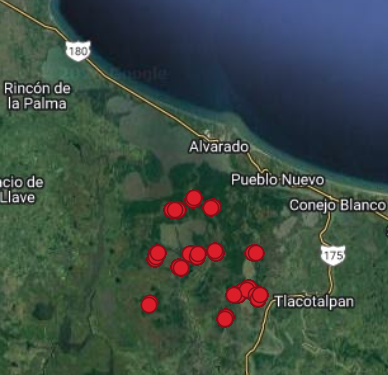

Code
library(skimr) # para echar un ojito a las bases de datos
library(sf) # para trabajo geoespacial con vectores

library(skimr) # para echar un ojito a las bases de datos
library(sf) # para trabajo geoespacial con vectoresPresentamos dos conjuntos de datos reales de monitoreo de variables ambientales, con propósitos ecológicos para ejercitar el pensamiento crítico sobre los resultados del monitoreo, así como las capacidades computacionales. El primer conjunto consiste en dos archivos de variables meteorológicas y el segundo en mediciones de nivel de inundación.
Los datos de esta serie fueron tomados con un termo-higrómetro con registro automático (logger) “Hygrochron Temperature and Humidity Data Logger” de la marca ibuttonlink, en el periodo comprendido entre: 2016-02-08 19:00:00 y 2017-05-31 12:01:00, en la localidad Tapachapa del Municipio Coatepec, Veracruz (lon: -96.98109; lat: 19.45871). Consta de 11,045 registros, en formato csv (comma separated value). El termohigrómetro fue colocado en un vivero de producción de árboles nativos para restauración de ecosistemas en bosques mesófilos de montaña y bosques templados.
Fuente de los datos: Pronatura Veracruz, 2017. (Licencia de uso: CC-by-SA)
archivo Gavilanes_Temperatura.csv
| Columna | datatype | Descripción |
|---|---|---|
| Date.Time | datetime | fecha-hora, formato día/mes/año hora:minuto |
| Unit | chr | Unidad, (°C para todo el dataset) |
| Value | dbl | Valor de temperatura leído |
read.csv("https://gitlab.com/datamarindo/datasets/-/raw/master/Gavilanes_Temperatura.csv?inline=false") |> skimr::skim()| Name | read.csv(“https://gitlab…. |
| Number of rows | 11045 |
| Number of columns | 3 |
| _______________________ | |
| Column type frequency: | |
| character | 2 |
| numeric | 1 |
| ________________________ | |
| Group variables | None |
Variable type: character
| skim_variable | n_missing | complete_rate | min | max | empty | n_unique | whitespace |
|---|---|---|---|---|---|---|---|
| Date.Time | 0 | 1 | 16 | 16 | 0 | 11044 | 0 |
| Unit | 0 | 1 | 1 | 1 | 0 | 1 | 0 |
Variable type: numeric
| skim_variable | n_missing | complete_rate | mean | sd | p0 | p25 | p50 | p75 | p100 | hist |
|---|---|---|---|---|---|---|---|---|---|---|
| Value | 0 | 1 | 20.01 | 6.44 | 3.51 | 15.54 | 18.55 | 24.55 | 39.04 | ▁▇▆▃▁ |
archivo Gavilanes_rh.csv
| Columna | datatype | Descripción |
|---|---|---|
| Date.Time | datetime | fecha-hora, formato día/mes/año hora:minuto |
| Unit | chr | Unidad, (%RH para todo el dataset) |
| Value | dbl | Valor de humedad relativa leído |
read.csv("https://gitlab.com/datamarindo/datasets/-/raw/master/Gavilanes_rh.csv?inline=false") |> skimr::skim()| Name | read.csv(“https://gitlab…. |
| Number of rows | 11045 |
| Number of columns | 3 |
| _______________________ | |
| Column type frequency: | |
| character | 2 |
| numeric | 1 |
| ________________________ | |
| Group variables | None |
Variable type: character
| skim_variable | n_missing | complete_rate | min | max | empty | n_unique | whitespace |
|---|---|---|---|---|---|---|---|
| Date.Time | 0 | 1 | 16 | 16 | 0 | 11044 | 0 |
| Unit | 0 | 1 | 3 | 3 | 0 | 1 | 0 |
Variable type: numeric
| skim_variable | n_missing | complete_rate | mean | sd | p0 | p25 | p50 | p75 | p100 | hist |
|---|---|---|---|---|---|---|---|---|---|---|
| Value | 0 | 1 | 88.32 | 22.59 | 10.81 | 72.28 | 101.82 | 104.69 | 111.17 | ▁▁▂▁▇ |

Ubicación del ibutton
Los piezómetros utilizados para este monitoreo consisten en un tubo de PVC de 2.0 a 2.1 m de largo y 2 pulgadas de diámetro, abierto por ambos lados, enterrado parado en el suelo. Cada lectura fue tomada manualmente con una cinta métrica, midiendo la diferencia del nivel del agua y la parte alta del tubo de PVC.
clave_punt, respectivamente.Fuente de los datos: Pronatura Veracruz, 2017. CC-by-SA
archivo Gavilanes_Temperatura.csv
| Columna | datatype | Descripción |
|---|---|---|
| clave_punt | chr | clave del piezómetro |
| latitud | dbl | latitud en grados del piezómetro |
| longitud | dbl | longitud en grados del piezómetro |
| predio_sit | chr | Nombre del predio |
| fecha | chr | fecha, formato día/mes/año |
| hora | chr | hora de toma de muestra (solo en algunos piezómetros) |
| ht_m | dbl | altura del piezómetro, centímetros |
| medida_cm | dbl | medición desde lo alto del piezómetro hasta el nivel del agua |
| inundación | dbl | nivel sobre el suelo de inundación (altura del piezómetro sobre el suelo menos la medida_cm ) |
| comentario | chr | observaciones |
| geom | geom | coordenadas UTM Zona 15 N (EPSG:32615) del piezómetro |
read_sf("https://gitlab.com/datamarindo/datasets/-/raw/master/piezometros_pver.gpkg?inline=false") |> skimr::skim()Warning: Couldn't find skimmers for class: sfc_POINT, sfc; No user-defined
`sfl` provided. Falling back to `character`.| Name | read_sf(“https://gitlab.c… |
| Number of rows | 1115 |
| Number of columns | 11 |
| _______________________ | |
| Column type frequency: | |
| character | 6 |
| numeric | 5 |
| ________________________ | |
| Group variables | None |
Variable type: character
| skim_variable | n_missing | complete_rate | min | max | empty | n_unique | whitespace |
|---|---|---|---|---|---|---|---|
| clave_punt | 0 | 1.00 | 8 | 9 | 0 | 34 | 0 |
| predio_sit | 0 | 1.00 | 8 | 22 | 0 | 15 | 0 |
| fecha | 0 | 1.00 | 10 | 10 | 0 | 248 | 0 |
| hora | 849 | 0.24 | 5 | 5 | 0 | 167 | 0 |
| comentario | 1032 | 0.07 | 9 | 126 | 0 | 30 | 0 |
| geom | 0 | 1.00 | 18 | 18 | 0 | 34 | 0 |
Variable type: numeric
| skim_variable | n_missing | complete_rate | mean | sd | p0 | p25 | p50 | p75 | p100 | hist |
|---|---|---|---|---|---|---|---|---|---|---|
| latitud | 0 | 1.00 | 18.65 | 0.04 | 18.59 | 18.62 | 18.66 | 18.70 | 18.72 | ▅▂▇▁▆ |
| longitud | 0 | 1.00 | -95.77 | 0.04 | -95.83 | -95.80 | -95.77 | -95.74 | -95.71 | ▅▇▆▅▇ |
| ht_m | 267 | 0.76 | 204.33 | 1.75 | 200.00 | 203.00 | 205.00 | 205.30 | 210.00 | ▂▂▇▁▁ |
| medida_cm | 1 | 1.00 | 101.55 | 31.20 | 13.00 | 83.00 | 97.75 | 117.00 | 205.50 | ▁▆▇▂▁ |
| inundaci | 1 | 1.00 | 2.94 | 31.10 | -100.00 | -12.15 | 7.00 | 22.00 | 87.00 | ▁▂▇▆▁ |

Ubicación de los piezómetros en el Sistema Lagunar de Alvarado